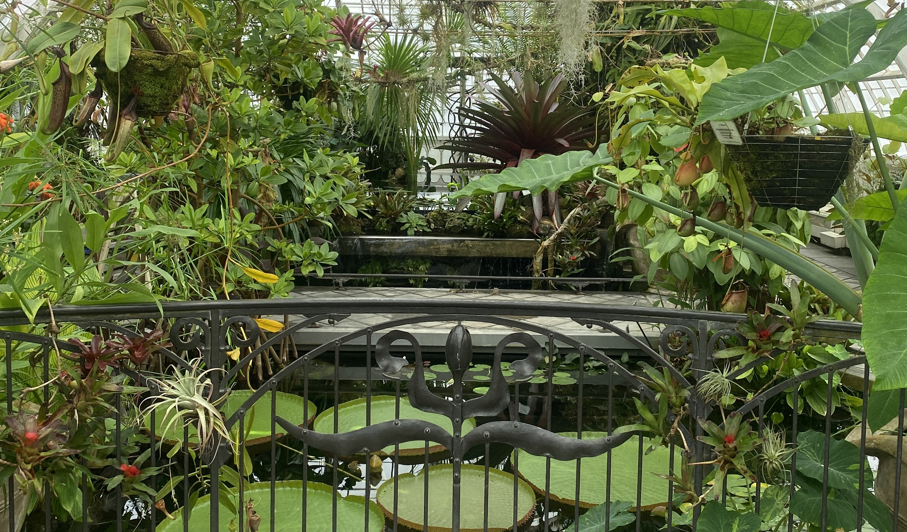
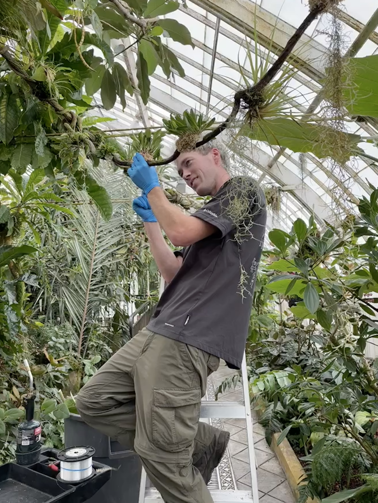
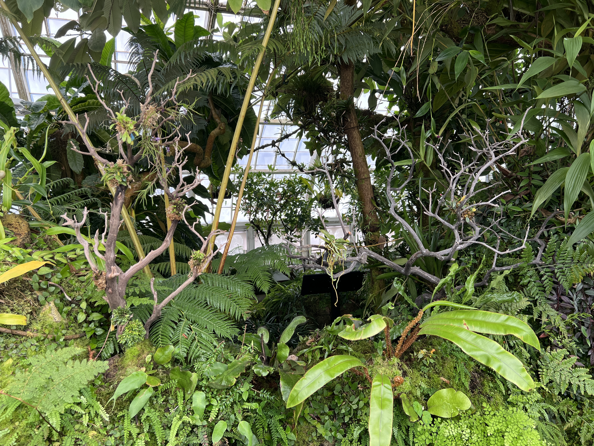
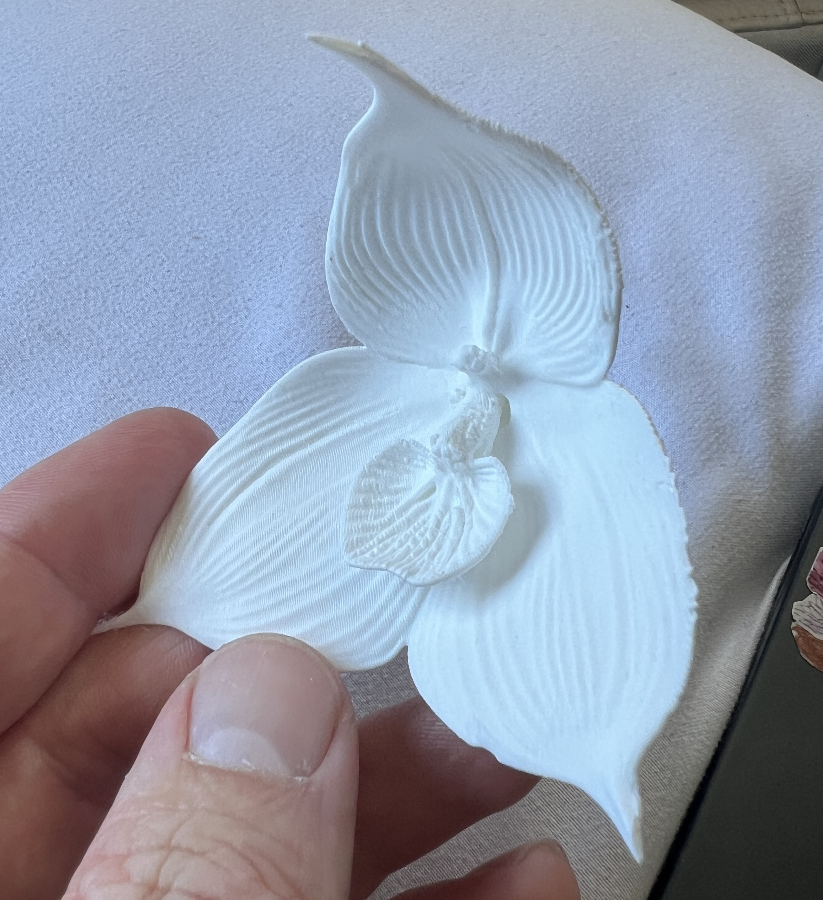
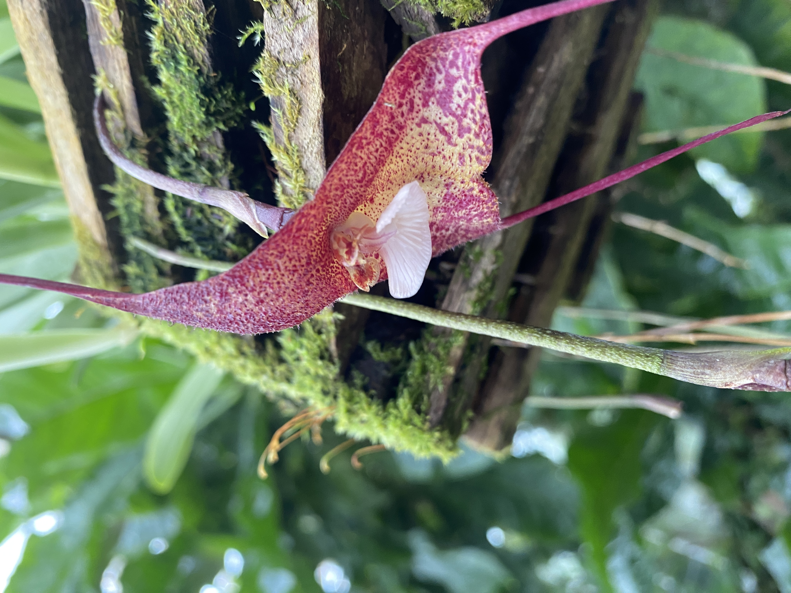
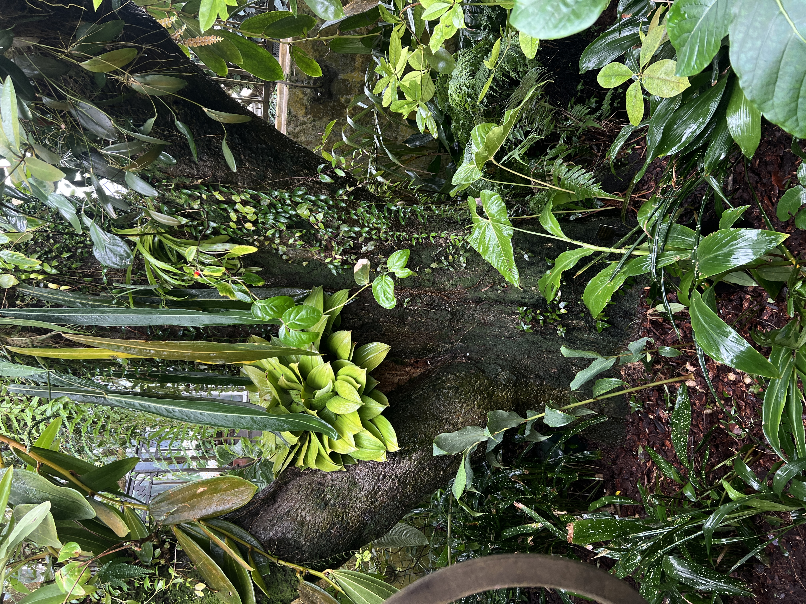
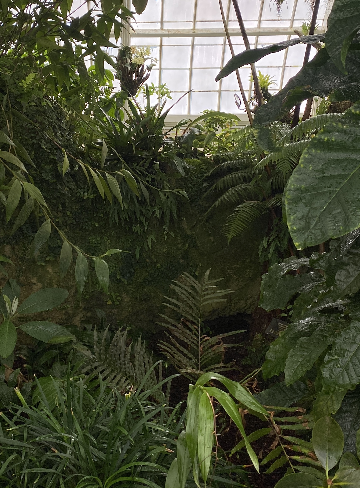
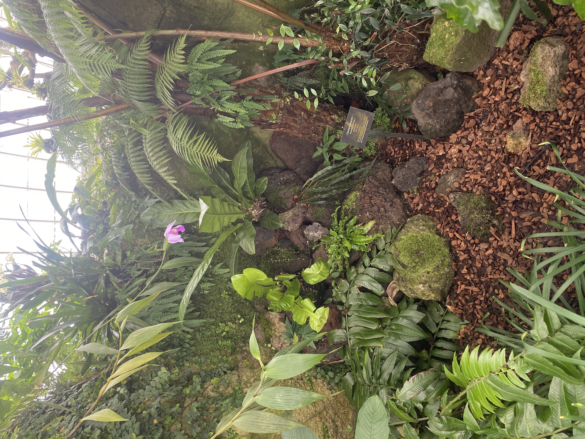

I have spent nearly every Wednesday since June 2025 assisting Head Nursery Specialist Kristen Natoli in cultivating and maintaining the living plant collection at San Francisco's Conservatory of Flowers.
My work has included a breadth of tasks from scrubbing the windows of algae to virus testing the rare orchid collection, though my primary focus has been on the design, build, and planting of new features within the Tropical Highlands gallery space.
Here you can see me mounting on the dracula orchid vines.



3d printed dracula orchid to test with curators.



What used to be a barren wall is now a rock feature to better feature the epiphyte and lithophyte collection, planting ferns, philodendron, and begonia.
